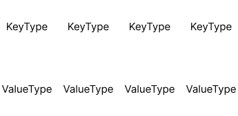

entiteter, komponenter och system
Vad presentationen går igenom
- Andra modeller för att definera objekt i spelvärlden
- The what, vad är ett entity component system?
- The why, varför skulle vi vilja använda det?
- The how, hur gör jag mitt eget?
Arvsmodellen
- Objekt defineras statiskt i dess arvshierarki
GameObject-component modell
- Används av Unity
- Objekt defineras i runtime av sina komponenter
- Beteende defineras med virtuella funktioner
Pseudokod
class Component
{
public:
virtual void Update(GameObject* aOwner, float aDT) = 0;
};
void GameObject::Update(float aDT)
{
for (Component* component : myComponents)
component->Update(this, aDT);
}
void Scene::Update(float aDT)
{
for (GameObject* gameObject : myGameObjects)
gameOject->Update(aDT);
}
void PlayerComponent::Update(GameObject* aOwner, foat aDT)
{
if (Input::Left())
aOwner->myPosition += Vector2(-1,0) * mySpeed * aDT;
if (Input::Right())
aOwner->myPosition += Vector2(1,0) * mySpeed * aDT;
}
Vad är ett entity component system?
- En dynamisk beskrivning av objekt i spelvärlden
- Arkitektur och designmönster
- Dataorienterad design
Entititer
- Entititer representerar ett individuellt objekt i världen. De är byggstenarna av ett ecs, och agerar som en samling av komponenter.
- Likt GameObjects i Unity ni är vana med, men i ett ECS är entiteter bara ett unikt id, oftast implementerat som en unsigned int.
- Dessa entiteter används som en nyckel till en associativ container, som kopplar entiteten till en komponent.
Komponenter
- Definerar beteende och egenskaper av en entitet.
- Är oberoende och enkapsulerade.
- Kan läggas till och tas bort från entiteter i runtime.
System
- System har inget eget tillstånd, det utför beteendet som defineras av en uppsättning komponenter
- Fokuserar på en specifik uppgift, ett system har ingen koppling till komponenter som inte berör den uppgiften.
Fördelar - Varför
Prestanda
-
Dataorientering, optimering för cache
- Komponenter av samma typ ligger på rad i minnet
- Iterering av komponenter kan göras linjärt
- triviellt flertrådad arkitektur
Dataorientering - cache is king
- Läsa minne från RAM är seeeegt, därför cachar vi ofta använt minne.
- När minne väl läses från RAM görs det i storleken av en cache-line, typiskt sett 64 bytes på x86/x64
Med detta i åtanke vill vi:
- Tänka på datan i strukturerna vi använder
- Hur kan våra algoritmer och system optimera för cache
- Undvika separata minnesallokeringar, allokera minne i chunks
Exempel - parallel arrays
Objektorienterat
struct AssociativeArray
{
Pair<KeyType, ValueType> myData[SIZE];
};
Dataorienterat
struct AssociativeArray
{
KeyType myKeys[SIZE];
ValueType myValues[SIZE];
};
Objektorienterat

Dataorienterat
Quiz
template <FirstType, SecondType>
struct Pair
{
FirstType myFirst;
SecondType mySecond;
};
std::cout << "Pair<char, int> = " <<sizeof(Pair<char, int>) << '\n';
Pair<char, int> = 8
struct MyStruct
{
char a;
int b;
char c;
};
std::cout << sizeof(MyStruct) << '\n';
MyStruct = 12
struct TheirStruct
{
int b;
char a;
char c;
};
std::cout << sizeof(TheirStruct) << '\n';
TheirStruct = 8
Multitrådning
eftersom system bara kan modifiera komponenterna de arbetar på, så kan vi vara säkra på att 2 trådar inte kommer hamna i ett race condition.Vi kan göra en graf av beroenden i våra system.